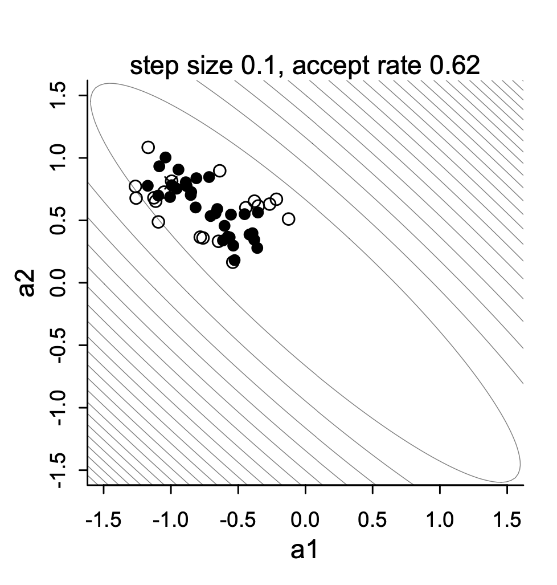
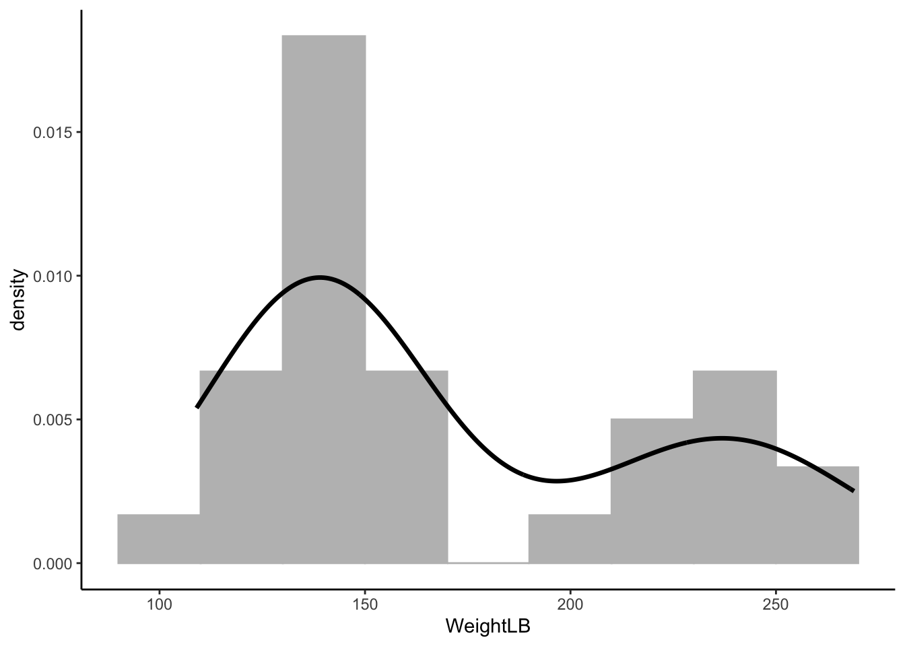
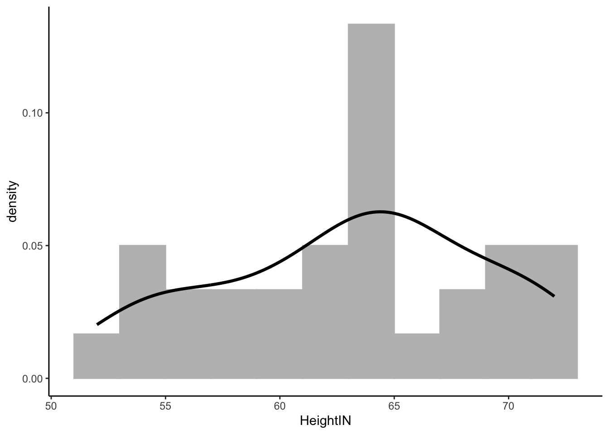
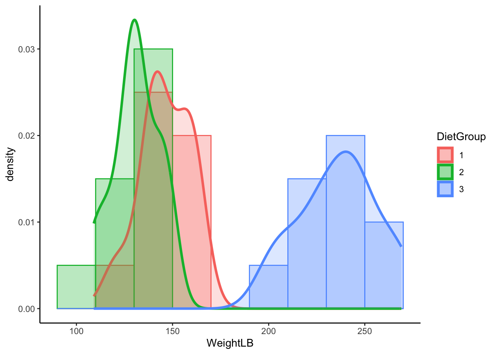
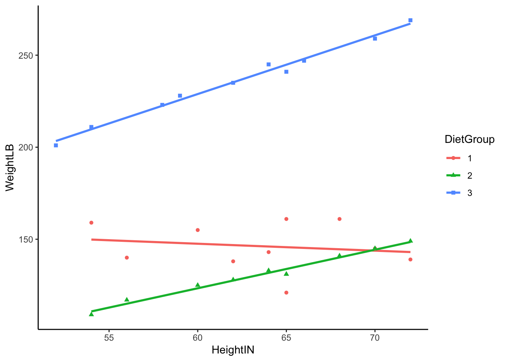

Download R file DietDataExample.R and data file DietData.csv
Quiz:
What is a conjugate prior?
Why we want to use conjugate priors?
In previous class…
We work with a simplest Bayesian model: roll “1” from a 6-size dice
We talked about the selection of prior distributions from uninformative to informative priors
We talked about binomial distribution as the likelihood function
The posterior distribution is directly derived by update \(\alpha\) and \(\beta\)
Markov Chain Monte Carlo Estimation
Today, we dive deeper into the estimation process.
Bayesian analysis is all about estimating the posterior distribution.
Up until now, we’ve worked with the posterior distribution that are well-known
Beta-Binomial conjugate pairs had a Beta posterior distribution
In general, likelihood distributions from the exponential family have conjugate priors
Conjugate prior: the family of the prior is equivalent to the family of posterior.
Why not keep using conjugate priors for all scenarios?
Oftentimes, however, posterior distributions are not easily obtainable
No longer able to use properties of the distribution to estimate parameters
It is possible to use an optimization algorithm (e..g., Newton-Raphson or Expectation-Maximization) to find maximum value of posterior distribution
But, such algorithms may be very time consuming for high-dimensional problems
Instead: “sketch” the posterior by sampling from it - then use that sketch to make inference
Sampling is done via MCMC
MCMC algorithm
MCMC algorithm interactively draws samples from the posterior distribution
For fairly simplistic models, each iteration has independent samples
Most models have some layers of dependency included
which can slow down the sample process from the posterior distribution
One problem of slowness of MCMC is high-dimensional problems
This plot shows one variant of MCMC - Metropolis sampling draws for two highly correlated parameters

Metropolis chains under high correlations
Variations of MCMC algorithms
Most of these specific algorithms use one of two types sampling:
Direct sampling from the posterior distribution (i.e., Gibbs sampling)
Often used when conjugate priors are specified
Popular software: BUGS, JAGS, Mplus
Indirect (rejection-based) sampling from the posterior distribution (e.g, Metropolis-Hastings, Hamiltonian Monte Carlo)
Popular software: Stan
Making MCMC Algorithms
Efficiency is the main reason for many algorithms
Efficiency in this context: How quickly the algorithm converges and provides adequate coverage (“sketching”) of the posterior distribution
No one algorithm is uniformly most efficient for all models (here model = likelihood \(\times\) prior)
The good news is that many software packages (stan, JAGS, Mplus, especially) don’t make you choose which specific algorithm to use
The bad news is that sometimes your model may take a large amount of time to reach convergence (think days or weaks)
Alternatively, you can code your own custom algorithm to make things run smoother (different priors/ sampling strategies)
Commonalities Across MCMC Algorithms
Despite having fairly broad differences regarding how algorithms sample from the posterior distribution, there are quite a few things that are similar across algorithms:
A period of the Markov chain where sampling is not directly from the posterior
The burnin period (sometimes coupled with other tuning periods and called warmup)
Methods used to assess convergence of the chain to the posterior distribution
Often involving the need to use multiple chains with independent and differing starting values
Summaries of the posterior distribution
Further, rejection-based sampling algorithms (e.g., Metropolis) often need a tuning period to make the sampling more efficient
The tuning period comes before the algorithm begins its burnin period
MCMC Demonstration
To demonstrate each type of algorithm, we will use a model for a normal distribution
We will investigate each, brief
We will then switch over to stan to show the syntax and let stan work
Finnaly, we will conclude by talking about assessing convergence and how to report parameter estimates
In this example data file, it contains 30 subjects who used one of three diets: diet 1 (diet=1), diet 2 (diet=2), and a control group (diet=3).
The file DietData.csv contains the data we needed.
Variables in the data set are:
Respondent: Respondent ID 1-30
DietGroup: 1, 2, 3 representing the group to which a respondent was assigned
HeightIN: The respondents’ height in inches
WeightLB (Dependent Variable): The respondents’ weight in pounds
Research Question: Are there differences in final weights between the three diet groups, and, if so, what the nature of the differences?
Before we conduct the analysis, let’s look at the data
Visualizing Data: WeightLB variable
library(ggplot2) # R package for data visualization# read in datadat <-read.csv("Code/DietData.csv")dat$DietGroup <-factor(dat$DietGroup, levels =1:3)head(dat)
# Histplot for WeightLB - Dependent Variableggplot(dat) +geom_histogram(aes(x = WeightLB, y = ..density..), position ="identity", binwidth =20, fill ='grey', col ='grey') +geom_density(aes(x = WeightLB), alpha = .2, size =1.2) +theme_classic()
Warning: Using `size` aesthetic for lines was deprecated in ggplot2 3.4.0.
ℹ Please use `linewidth` instead.
Warning: The dot-dot notation (`..density..`) was deprecated in ggplot2 3.4.0.
ℹ Please use `after_stat(density)` instead.

Visualize Data: HeightIN Variable
# Histgram for HeightIN - Independent Variableggplot(dat) +geom_histogram(aes(x = HeightIN, y = ..density..), position ="identity", binwidth =2, fill ='grey', col ='grey') +geom_density(aes(x = HeightIN), alpha = .2, size =1.2) +theme_classic()

Visualize Data: WeightLB by DietGroup
# Histgram for WeightLB x Groupggplot(dat, aes(x = WeightLB, fill = DietGroup, col = DietGroup)) +geom_histogram(aes(y = ..density..), position ="identity", binwidth =20, alpha =0.3) +geom_density(alpha = .2, size =1.2) +theme_classic()

Visualizing Data: WeightLB by HeightIN by DietGroup
# Histgram for WeightLB x HeightIN x Groupggplot(dat, aes(y = WeightLB, x = HeightIN, col = DietGroup, shape = DietGroup)) +geom_smooth(method ='lm', se =FALSE) +geom_point() +theme_classic()
`geom_smooth()` using formula = 'y ~ x'

Class Discussion: What do we do?
Now, your turn to answer (statistical) questions:
What type of analysis seems most appropriate for these data?
Is the dependent variable (WeightLB) is appropriate as-is for such analysis or does it need transformed?
Are the independent variables (HeightIN, DietGroup) is appropriate as-is for such analysis or does it need transformed?
Scientific Judgement…
Linear Model with
# Linear Model with Least Squares## Center independent variable - HeightIN for better interpretationdat$HeightIN <- dat$HeightIN -60## an empty model suggested by dataEmptyModel <-lm(WeightLB ~1, data = dat)## Examine assumptions and leverage of fit### Residual plot, Q-Q residuals, Scale-Location# plot(EmptyModel)## Look at ANOVA table### F-values, Sum/Mean of square of residuals# anova(EmptyModel)## look at parameter summarysummary(EmptyModel)
Call:
lm(formula = WeightLB ~ 1, data = dat)
Residuals:
Min 1Q Median 3Q Max
-62.00 -36.75 -24.00 49.00 98.00
Coefficients:
Estimate Std. Error t value Pr(>|t|)
(Intercept) 171.000 9.041 18.91 <2e-16 ***
---
Signif. codes: 0 '***' 0.001 '**' 0.01 '*' 0.05 '.' 0.1 ' ' 1
Residual standard error: 49.52 on 29 degrees of freedom